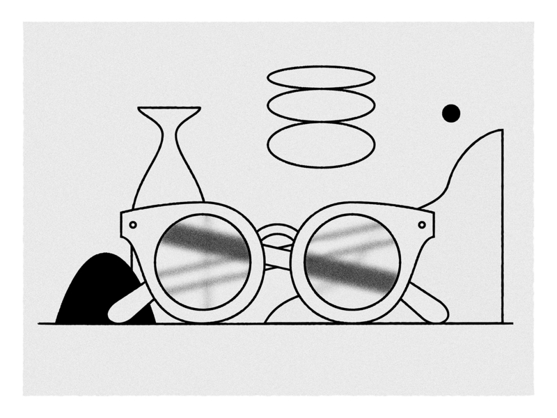
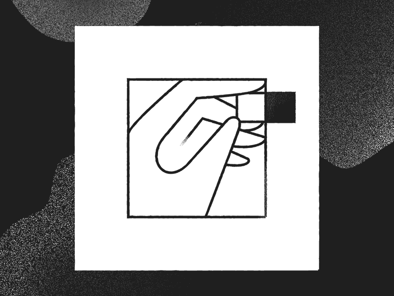
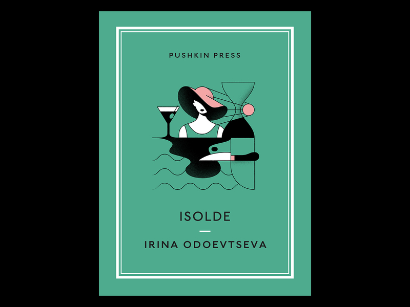
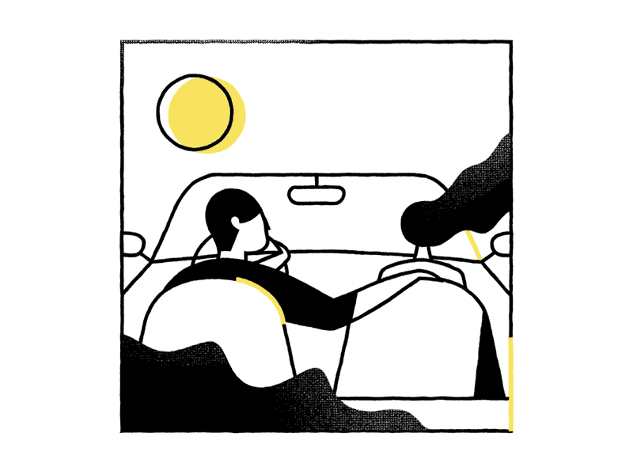
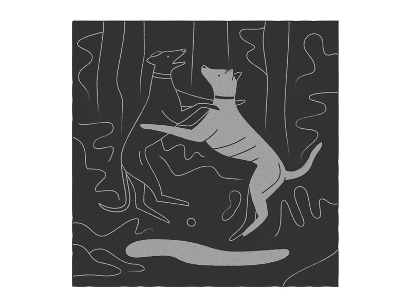
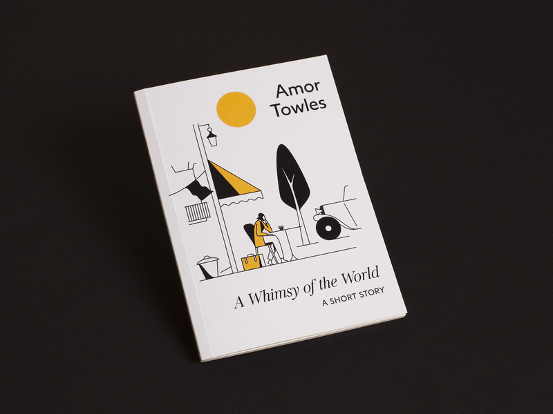
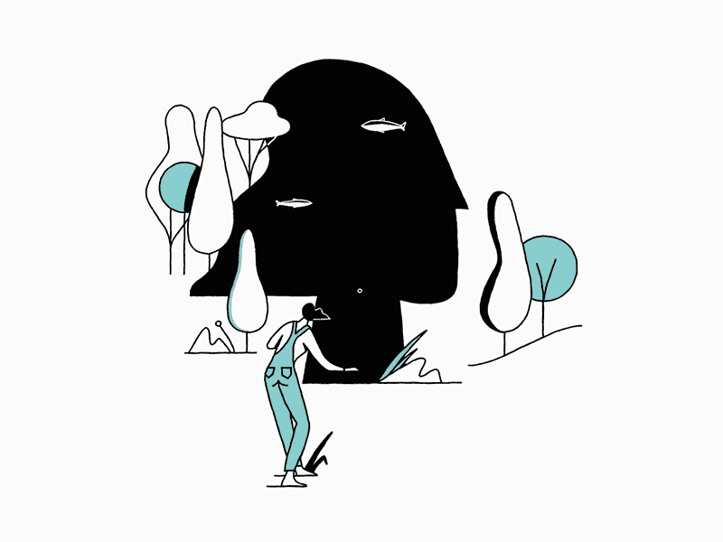

yena
yena
Portpolio
About
Contact
yena Creative studio
Please contact me by email.
(문의는 메일로 보내주세요.)
smireyang@gmail.com
Portpolio
Perspective
perspective
Horizon
horizon
Rgb
rgb
Focal
focal

Bike
bike
Hand
hand

Isolde-book
isolde-book

Roadtrip
roadtrip

Blog

FEB 01, 2019
Illustrated a short story by Amor Towles from ‘A Whimsy Of The World’ for British Vogue. AD by Dom Kelly

FEB 05, 2019
Had a lot of fun Illustrating a short story by American novelist Amor Towles for Vogue.

FEB 15, 2019
“Ellie could easily take a left instead of a right, and end up on the banks of the Tanner River throwing stones at the silvery shadows of trout.”by Amor Towles from ‘A Whimsy Of The World’